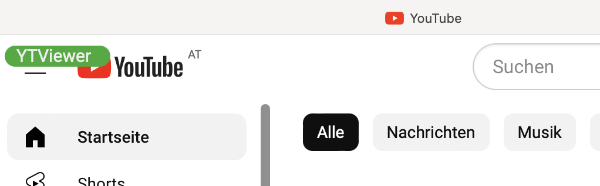
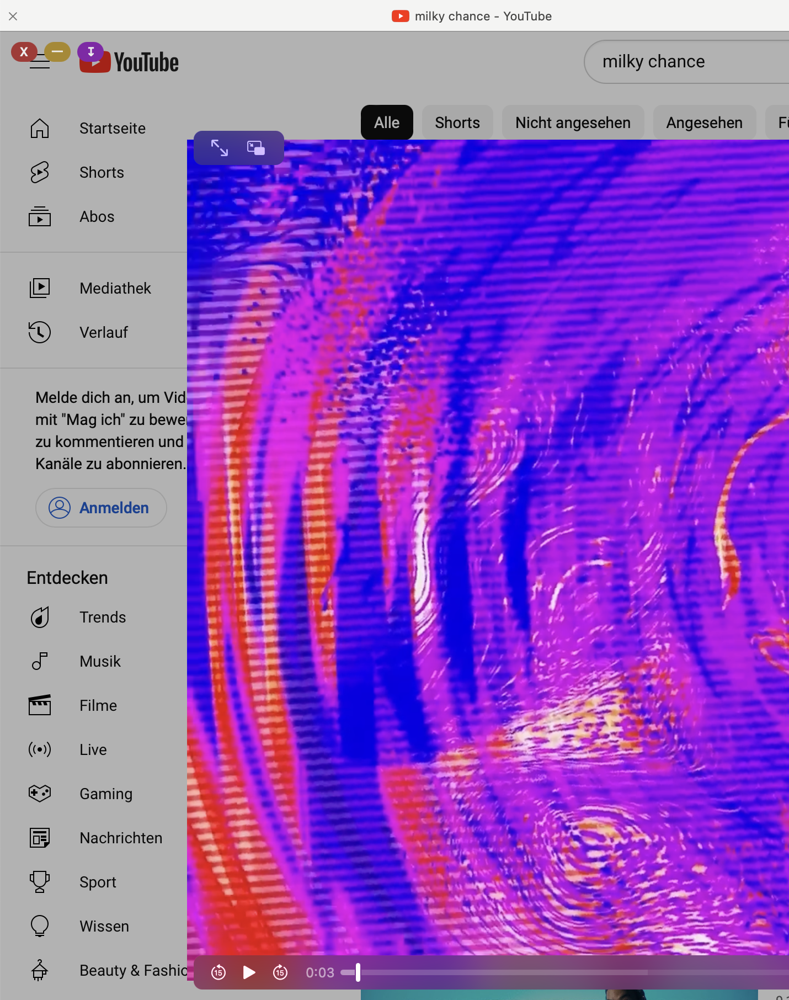

Author: Thomas Tschurtschenthaler
GitHub: YTViewer
Drag the bookmarklet YTViewer link to the bookmarks bar in your browser to add YTViewer.
Activate YTViewer by clicking in the Bookmarklet Link on www.youtube.com or m.youtube.com.
Easiest way to add YTViewer on iOS devices is to add it to your desktop safari and synchronize bookmarks via iCloud.
Alternatively you may add this page as a bookmark to your iOS device and then edit the bookmark link destination replacing it with the YTViewer javascript.
Just copy the code to the clipboard and paste it.
Once activated YTViewer looks like this:

Now any youtube thumbnail - except of shorts - opens in YTViewer.
A click on the "Download" button reveals download links (Video and Audio, only Video, only Audio).
Right clicking - or long touch on mobile - on a link opens the context menu and you can save the video/audio file on your device.
